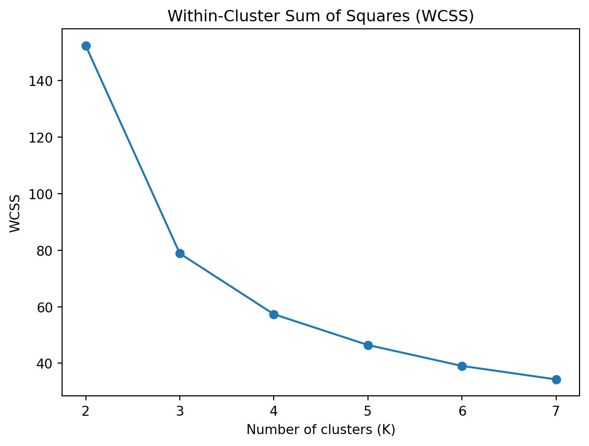

Market segmentation is the process of dividing a broad consumer or business market, normally consisting of existing and potential customers, into sub-groups of consumers (known as segments) based on some type of shared characteristics. The objective is to design marketing strategies that target specific groups more effectively, leading to better customer satisfaction and increased business success.
Cluster analytics, also known as cluster analysis or clustering, is a technique used in data analysis and machine learning to group a set of objects in such a way that objects in the same group (called a cluster) are more similar to each other than to those in other groups (clusters). The primary goal of cluster analytics is to find natural groupings in data based on inherent similarities or patterns.
Cluster analytics provides a powerful, data-driven approach to market segmentation, uncovering natural groupings within the data that might not be visible through traditional methods. By leveraging cluster analytics, businesses can achieve more accurate, dynamic, and actionable market segments, leading to enhanced marketing effectiveness and improved customer satisfaction.
Data overview
Sepal.Length
Sepal.Width
Petal.Length
Petal.Width
Species
0
5.1
3.5
1.4
0.2
setosa
1
4.9
3.0
1.4
0.2
setosa
2
4.7
3.2
1.3
0.2
setosa
3
4.6
3.1
1.5
0.2
setosa
4
5.0
3.6
1.4
0.2
setosa
...
...
...
...
...
...
145
6.7
3.0
5.2
2.3
virginica
146
6.3
2.5
5.0
1.9
virginica
147
6.5
3.0
5.2
2.0
virginica
148
6.2
3.4
5.4
2.3
virginica
149
5.9
3.0
5.1
1.8
virginica
150 rows × 5 columns
# Calculate summary statistics for the datasetsummary_statistics = iris.describe()# Display the summary statisticssummary_statistics
Sepal.Length
Sepal.Width
Petal.Length
Petal.Width
count
150.000000
150.000000
150.000000
150.000000
mean
5.843333
3.057333
3.758000
1.199333
std
0.828066
0.435866
1.765298
0.762238
min
4.300000
2.000000
1.000000
0.100000
25%
5.100000
2.800000
1.600000
0.300000
50%
5.800000
3.000000
4.350000
1.300000
75%
6.400000
3.300000
5.100000
1.800000
max
7.900000
4.400000
6.900000
2.500000
K-Means
To implement the k-means algorithm and visualize its steps, I will follow these steps:
Initial of Centroids
Compute distances
Assign clusters based on initial centroids
Update Centroids
Implement the k-means algorithm.
Visualize steps of the algorithm.
Let’s start by normalizing the dataset and implementing the k-means algorithm. We’ll use only the numerical columns for clustering
Initial of Centroids
The initialization of centroids is a crucial step in the k-means algorithm. The process involves selecting \({k}\) initial points in the dataset that will serve as the starting centroids for the clustering process. Proper initialization can significantly affect the convergence speed and the quality of the final clusters. Here’s a detailed explanation of the centroid initialization process:
In this step, we randomly select \({k}\) data points from the dataset. The initial centroids act as the starting points for the algorithm.
These points are chosen to represent the center of the initial clusters. Since they are selected randomly, different runs of the algorithm might start with different centroids, leading to different clustering results.
# Extract the first data point from the datasetfirst_data_point = iris.select_dtypes(include=[np.number]).iloc[0].values# Compute distances from the first data point to each centroiddistances_first_point = np.linalg.norm(first_data_point - initial_centroids_numeric.values, axis=1)# Coordinates of the first data point and initial centroidsfirst_data_point_coords = first_data_point[:2] # Only take the first two dimensionscentroid_coords = initial_centroids_numeric.values[:, :2] # Only take the first two dimensions# Plot the first data point and centroids with distancesplt.figure(figsize=(8, 6))plt.scatter(first_data_point_coords[0], first_data_point_coords[1], color='green', s=100, label='Data Point 1')plt.scatter(centroid_coords[:, 0], centroid_coords[:, 1], color='red', s=100, label='Centroids')# Draw lines and annotate distancesfor i, (x, y) inenumerate(centroid_coords): plt.plot([first_data_point_coords[0], x], [first_data_point_coords[1], y], 'k-') distance = np.linalg.norm(first_data_point_coords - np.array([x, y])) mid_x, mid_y = (first_data_point_coords[0] + x) /2, (first_data_point_coords[1] + y) /2 plt.text(mid_x, mid_y, f'{distance:.2f}', fontsize=12)# Annotate plotplt.xlabel('Sepal Length')plt.ylabel('Sepal Width')plt.legend()plt.title('Distances from First Data Point to Initial Centroids')plt.show()
The plot visualizes the distances from the first data point in Iris dataset to three initial centroids:
Distance to Centroid 1:
The distance is approximately 0.67 units.
This centroid is the closest to Data Point 1.
Distance to Centroid 2:
The distance is approximately 1.22 units.
This centroid is further away compared to Centroid 1.
Distance to Centroid 3:
The distance is approximately 2.75 units.
This centroid is the farthest from Data Point 1.
Iterpretation:
Cluster Assignment: Based on the Euclidean distances, Data Point 1 would be assigned to the cluster of Centroid 1, as it is the nearest.
Cluster Formation: Initial clusters will be formed by assigning each data point in the dataset to the nearest centroid. Over several iterations, the centroids will move to minimize the within-cluster variance.
After assigning each data point to the nearest centroid (forming clusters), the algorithm updates the position of each centroid based on the mean of the data points assigned to that cluster. This step ensures that the centroids move closer to the center of their respective clusters, improving the overall clustering result.
# Step 3: Update centroidsdef update_centroids(X, labels, k): X_numeric = X.select_dtypes(include=[np.number]) new_centroids = np.array([X_numeric.values[labels == i].mean(axis=0) for i inrange(k)])return new_centroids
Why This Step is Important:
Accuracy: Updating the centroids ensures that they accurately represent the current cluster composition.
Convergence: The k-means algorithm converges when the centroids stabilize, meaning they no longer change significantly between iterations.
Cluster Quality: Properly updated centroids lead to more compact and well-defined clusters, improving the overall quality of the clustering.
# Plot the final clustersdef plot_final_clusters(X, centroids, labels, message): X_numeric = X.select_dtypes(include=[np.number]) X_values = X_numeric.values plt.figure(figsize=(8, 6))for i, cluster inenumerate(X_values): plt.scatter(X_values[:, 0], X_values[:, 1], c=labels, s=30, cmap='viridis') plt.scatter(centroids[:, 0], centroids[:, 1], s=300, c='red', marker='X') plt.title(f'K-means using {message}') plt.xlabel('Sepal Length') plt.ylabel('Sepal Width') plt.show()# Plot final clustersplot_final_clusters(iris, final_centroids, final_labels, message ="Self-Build Fuction")
Compare to the built-in Python package
# Using the built-in KMeans function from scikit-learniris_numeric = iris.select_dtypes(include=[np.number])kmeans_sklearn = KMeans(n_clusters=3, random_state=42)kmeans_sklearn.fit(iris_numeric)# Extracting the centroids and labels from the sklearn KMeanscentroids_sklearn = kmeans_sklearn.cluster_centers_sklearn_labels = kmeans_sklearn.labels_# Align labels using the Hungarian algorithm. # This function to making sure label of both approaches are the same colors # without change the clusters themselvesdef align_labels(final_labels, sklearn_labels): D = np.zeros((k, k))for i inrange(k):for j inrange(k): D[i, j] = np.sum((sklearn_labels == i) != (final_labels == j)) row_ind, col_ind = linear_sum_assignment(D) aligned_labels = np.zeros_like(sklearn_labels)for i, j inzip(row_ind, col_ind): aligned_labels[sklearn_labels == i] = jreturn aligned_labelsaligned_labels = align_labels(final_labels, sklearn_labels)plot_final_clusters(iris, centroids_sklearn, aligned_labels, message ="Sklearn Function")
As we can see, both plot presents the same cluster characteristic. Here are the detailed intepretation:
Cluster 1 (Green):
Located primarily on the left side of the plot.
Contains data points with a range of Sepal Lengths and Sepal Widths.
The centroid is positioned where the density of green points is highest.
Cluster 2 (Purple):
Positioned in the middle of the plot.
Comprises data points with intermediate Sepal Lengths and Sepal Widths.
The centroid is at the center of the dense region of purple points.
Cluster 3 (Yellow):
Found on the right side of the plot.
Includes data points with larger Sepal Lengths and a range of Sepal Widths.
The centroid is placed where the yellow points are densest.
Cluster Separation and Compactness:
Compactness: Each cluster appears to be relatively compact, with data points grouped closely around their centroids.
Separation: There is clear separation between the clusters, as indicated by distinct regions of colors. This suggests that the clusters are well-defined and the algorithm has successfully partitioned the data.
Cluster Size:
Cluster 1 (Green) appears to have the largest number of data points.
Cluster 3 (Yellow) has fewer data points compared to Cluster 1.
Cluster 2 (Purple) has the smallest number of data points.
Comparison to Initial Centroid Selection
Initial Centroids:
The initial centroids were randomly placed and did not represent the actual data distribution well.
The data points were not assigned to any clusters, so no clear clustering was visible.
Movement of Centroids:
The centroids moved significantly from their initial positions to their final positions.
This movement indicates that the algorithm iteratively adjusted the centroids to better represent the data points assigned to each cluster.
Clustering Quality:
Initial State: No clear clusters, with centroids positioned arbitrarily.
Final State: Well-defined clusters with centroids accurately representing the center of each cluster.
Summary
The final clusters plot demonstrates the effectiveness of the k-means algorithm in partitioning the data into three distinct clusters.
The clusters are well-separated and compact, indicating that the centroids have been optimized to minimize within-cluster variance.
The clear separation and grouping of data points into distinct clusters highlight the successful convergence of the k-means algorithm.
By analyzing the final clusters, we can conclude that the k-means algorithm has effectively identified meaningful patterns in the data, resulting in well-defined clusters
Number of Clusters
Within Cluster Sum of Squares
The Within-Cluster Sum of Squares (WCSS), also known as inertia, is a measure of the total variance within clusters. It quantifies the compactness of the clusters formed by a clustering algorithm like k-means. The goal of k-means clustering is to minimize this WCSS value.
For a given set of clusters \({C}\) = { \({C_1}\), \({C_2}\), \(\ldots\), \({C_k}\) }, where \({C_i}\) represents the \({i}\)-th cluster, the WCSS is defined as follows:
\(\mu_i\) is the centroid of the \({i}\)-th cluster.
\({\|x - \mu_i\|}\) represents the Euclidean distance between a data point \({x}\) and the centroid \(\mu_i\).
# Define range of clusterscluster_range =range(2, 8)wcss = []for k in cluster_range: kmeans = KMeans(n_clusters=k, random_state=42) kmeans.fit(iris_numeric) wcss.append(kmeans.inertia_)plt.plot(cluster_range, wcss, marker='o')plt.title('Within-Cluster Sum of Squares (WCSS)')plt.xlabel('Number of clusters (K)')plt.ylabel('WCSS')plt.show()

The WCSS plot shows the sum of squared distances between each point and the centroid of its assigned cluster for different numbers of clusters (K). The goal is to minimize the WCSS, indicating compact clusters where data points are close to their centroids.
K=2: The WCSS is very high (~145), suggesting that having only two clusters does not effectively capture the structure of the data.
K=3: There is a significant drop in WCSS to around 85, indicating that adding a third cluster greatly improves the compactness of the clusters.
K=4 to K=7: The decrease in WCSS continues but at a much slower rate. The changes are more gradual, indicating diminishing returns as more clusters are added.
Interpretation
Elbow Point: The “elbow” point is typically where the WCSS starts to decrease more slowly. In this plot, the elbow is at K=3.
Diminishing Returns: After K=3, adding more clusters results in smaller reductions in WCSS, suggesting that the additional clusters do not significantly improve the clustering quality.
The WCSS plot suggests that K=3 is a good choice for the number of clusters because it is the elbow point where the rate of decrease in WCSS slows down. This indicates a balance between having a sufficient number of clusters and maintaining compact clusters.
Silhouette Score
The Silhouette Score is a metric used to evaluate the quality of a clustering. It measures how similar each point is to its own cluster compared to other clusters. The silhouette score ranges from -1 to 1, where a higher score indicates that the clusters are well-separated and well-defined.
The silhouette score for a data point \({i}\) is defined as:
\[ s(i) = \frac{b(i) - a(i)}{\max(a(i), b(i))} \]
where:
\({a(i)}\) is the average distance between the data point \({i}\) and all other points in the same cluster.
\({b(i)}\) is the minimum average distance between the data point \({i}\) and points in the nearest cluster that \({i}\) is not a part of.
The overall silhouette score for a clustering is the mean silhouette score of all the data points.
silhouette_scores = []for k in cluster_range: kmeans = KMeans(n_clusters=k, random_state=42) kmeans.fit(iris_numeric) silhouette_scores.append(silhouette_score(iris_numeric, kmeans.labels_))plt.plot(cluster_range, silhouette_scores, marker='o')plt.title('Silhouette Score')plt.xlabel('Number of clusters (K)')plt.ylabel('Silhouette Score')plt.show()
The Silhouette Score plot shows the average silhouette score for different numbers of clusters (K). The silhouette score measures how similar a point is to its own cluster compared to other clusters, with values ranging from -1 to 1.
K=2: The silhouette score is the highest (~0.67), suggesting that two clusters provide the best separation and well-defined clusters.
K=3: The silhouette score decreases to about 0.55, indicating that the separation between clusters is not as good as when K=2.
K=4 to K=7: The silhouette score continues to decrease, indicating that adding more clusters reduces the quality of the separation between clusters.
Interpretation
Peak Score: The highest silhouette score is at K=2, suggesting that two clusters provide the best-defined and well-separated clusters.
Decreasing Trend: As K increases, the silhouette score decreases, indicating that adding more clusters reduces the quality of separation.
The Silhouette Score plot suggests that K=2 is the best choice for the number of clusters because it has the highest score, indicating the best separation between clusters.